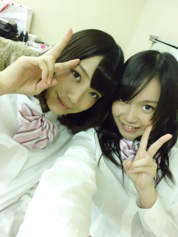

| 2012/02 02 Thu | ひめたん(*ゝω･*)ﾉその６９ |
昨日はみんなの個人PV見よったらAM1:30になってたってゆーからびっくり。
{kind=link}
ご存知ですかみなさまー？乃木坂46公式サイトから、ファーストシングルの特典映像である
「乃木坂46×33人のクリエイターたち」
のダイジェスト盤が見れちゃいますよ∩^ω^∩

面白いですよね。みんな可愛いですよね。
実は乃木メンのみんなは先に全員分の映像をフルで見ちゃったんだー♪
上映会したんよ。はー３時間くらいかかったかな。
笑いあり、涙あり、ドラマも、芸術も、シュールなんもありあり!
見終わったあとはお腹いっぱいになりますよみなさんー。ひめたんが保証する(ω)!
うん。
撮影秘話まで書けちゃいそうな勢いだったけど、よー考えたらまだ発売前だった★
あと20日待っててくださーいな(∀)/
 乃木坂の研修ってどんなことしたの？
乃木坂の研修ってどんなことしたの？
それは業務秘密です(
*
/ω＼
*
)ふふふ
とかゆーて♪
メニューは日替わりですよ。イベント前はイベントの練習したり(^^)
ひめたんはAKB48劇場なんて行ったことないでしょう？
行ったことないですー。
東京に来たら行ってみたいなーってのは前からずっと思ってるのですが
チケットの倍率すーごいって聞いたことあります('・ω・`)
んでもいつか行ってみたい...
かなりーん
（中田花奈chan）
!連れてってー!!!
下北には良く参加するね！ 大変な時期なのに。 息抜きかな？？？
あー確かにそうですよね。ひめたんいろんな人に心配していただきましたね。
「今だから言える話は？」
って質問にいつも困るんぢゃけど、まさに今だから言える話ー。
下北FM、受験の前日でしたまさかの!
(・o・ノ)ノ!!!
ほんとにまさかだよね。うんまさかのまさか!
最近イベントなかったから、みなさんに会いたいなーと思って♪
合格は下北ぱわーのおかげかな(∀)
揺る巻き+ぱっつん似合ってて可愛かったよ
あれは自分でやったのかな？それともスタッフさん？
ヘアメイクさん(ω)/
ひめたんも高校生なったら髪巻き巻きできるようになりたいなー。
そいえばひめたんの2011年の目標何だったか知ってます？
「自分でポニーテールできるようになる!」
だったんぢゃけどー...
今だにできない。うん♪
下北FM見たよ～「大蔵さん」だね
ひめたん大蔵さんの漢字間違ってる！！ｗ「大倉」じゃなくて「大蔵」ですよ～
おーい、ひめたん(;^_^A
片想いFinallyだよ、Lが一つ足りなーい(^Q^)/^
名前、曲名、ミスばっかだー本当に本当ごめんなさいっ!!
毎週下北FM見るから、毎日「片想いFinally」歌うから、許してー(';ω;){上目遣いでうるるるる)
ここだけの話絡みずらいメンバーはいる？天然すぎて会話成立しないとか……
天然で有名な
ほしみなちゃん
（星野みなみchan）
とは会話が成立するどころか超盛り上がっちゃうからご安心を(∀)/
しっかし乃木坂は天然が多いからなー♪
頭につけてる飾り、何なのかな？
リボンじゃないよね。
まさかのリボンでございます。
(
∞
・・)/
ひめたんリボンが好きでね、1日のヘアに困ったらとりあえずリボンする子なのー♪
今はぴんくのリボンがどっか行ったみたいだけど、
白いリボンで代用できてるから大丈夫(^^)/
んでもリボンの数はたかみなさんには勝てないです。
中元さん推すのに年齢制限はありますかぁ？
ちょっと気になってます。
今の所ひめたんが知っとるの最年少は小学1年生の可愛いおんなのこ、
最年長は67歳ひめたんのおじいちゃん!
記録に挑戦したいひとーはーい(ω)/？
重要な事なのでもう1度書きます
スケートのやつ何て言ったか教えてwww
んー困った(o>ω<o)!
もう1回スケートコメント聞きたいよって方は
明日ひめたんとスケート行きましょう。
ひめたんは男の子にチョコ渡したことある？♪
ひめたんがどんな子か知ってますかー？
徹夜してクラス全員、部活全員のお菓子作るような子ですよ(`・ω・')どや!
もっとも、今年のバレンタインは東京にいるような気がしてならないけれどもー♪
私は最近乃木坂46ファンになったんだけど、乃木坂46はいつ本格始動したの??
2011年8月21日!
みんなにとっての記念日であります(`・・)ゝきりっ
...久々に
さゆりんごちゃん
（松村沙友理chan）
の真似してみたでございます(^・u・)
ひめたんはシャンプー何使ってる？
そいえば
あみあみ
（能條愛未chan）
とこの前シャンプートークした!
最近あのシャンプー気になるんだよね。どーしよっかな。買い替えてみよっかな。的な(ｗ)/
ひめたんお気に入りのシャンプー探してみるから!しばしお待ちをー。
まいまい
（深川麻衣chan）
と
みゅみゅ
（若月佑美chan）
と
「つけまつける」
熱唱なうー♪(
*
/ω＼
*
)

まいまい
ひめたん
ひめたん
{kind=link}